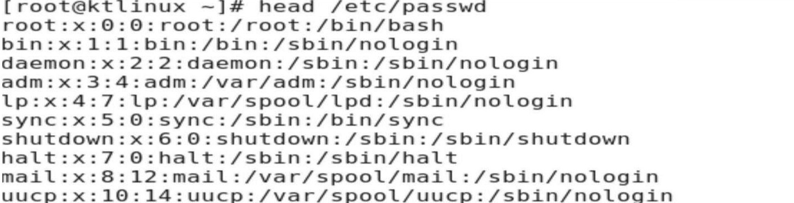

wise. Ex: less /etc/passwd
Note: -press Enter key to scroll down line by line (or)
Use d to go to next page
Use b to go to previous page
Use / to search for a word in the file
Use v to go vi mode where you can edit the file and once you save it you will back to less command
More is exactly same like Less
Ex: #more/etc/passwd
Note: -press Enter key to scroll down line by line (or)
Use d to go to next page
Use b to go to previous page
Use / to search for a word in the file
Use v to go vi mode where you can edit the file and once you save it you will back to less command
It is used to display the top 10 lines of the files.
Ex: #head/etc/passwd
It is used to display the last 10 lines of the files.
Ex: #tail/etc/passwd